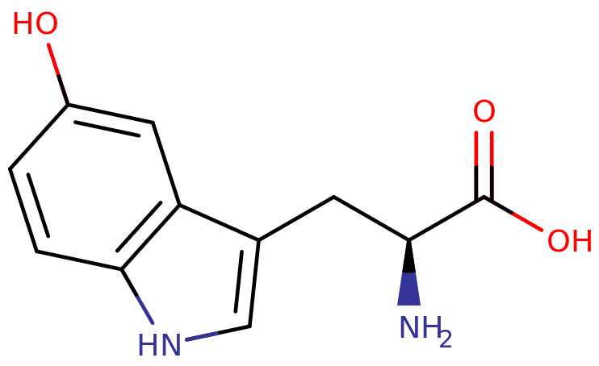

5-Hydroxytryptophan
| 5-Hydroxytryptophan |
|---|
|  |
| Chemical Nomenclature |
| 5-HTP, Oxitriptan, Cincofarm, Levothym, Levotonine, Oxyfan, Telesol, Tript-OH, and Triptum |
| 2-amino-3-(5-hydroxy-1H-indol-3-yl)propanoic acid |
| Class Membership |
| Nootropic |
| Tryptamine / Amino acid |
| Dosage |
| Threshold: 25 mg |
| Common: 50 - 100 mg |
| Strong: 300 - 500 mg |
| Heavy: 500 mg + |
| Duration |
| Total: 4 - 6 hours |
| Onset: 30 - 60 minutes |
| Peak: 1 - 2 hours |
| Interactions |
| Selective serotonin re-uptake inhibitors |
| Serotonin releasers |
| MAOIs |
| Tricyclic antidepressants |
| Tramadol |
5-Hydroxytryptophan (also known as 5-HTP and oxitriptan) is a naturally occurring chemical substance and a metabolic intermediate in the biosynthesis of serotonin in the human body.[1]
5-HTP is available over the counter in the United States, United Kingdom, and Canada as a dietary supplement and is sometimes used as an antidepressant, sleep aid, and appetite suppressant. It is marketed in some European countries as a prescription drug for the treatment of major depression.[2]
Uses
5-HTP is a supplement that acts as a precursor for serotonin. It is sometimes recommended to be used after MDMA experiences to try to restore depleted serotonin reserves. However, taking 5-HTP shortly before or with MDMA may cause excessive serotonin levels in the brain, which can lead to serotonin syndrome. As a result, it is advised to wait until the day after the MDMA has been used before consuming 5-HTP.
Clinical trials have shown to be inconclusive as to whether 5-HTP is effective for treating depression. Erowid experience reports on 5-HTP's effects on mood and depression vary depending on the individual, although mood-elevating effects appear to be semi-consistent across reports.
Pharmacology
The psychoactive action of 5-HTP is derived from its increase in production of serotonin in central nervous system tissue.
5-HTP is decarboxylated to serotonin (5-hydroxytryptamine or 5-HT) by the enzyme 'aromatic-L-amino-acid decarboxylase', with the help of vitamin B6.[3] This reaction occurs both in nervous tissue and in the liver.[4] 5-HTP crosses the blood–brain barrier, while 5-HT (serotonin) does not.[5]
Excess 5-HTP, especially when administered with vitamin B6, is thought to be metabolized and excreted.[6]
Subjective effects
Disclaimer: The effects listed below are cited from my Subjective Effect Index (SEI), which relies on assorted anecdotal reports and the personal experiences of Erowid contributors. As a result, they should be taken with a healthy amount of skepticism. It is worth noting that these effects will not necessarily occur in a consistent or reliable manner, although higher doses (common+) are more likely to induce the full spectrum of reported effects. Likewise, adverse effects become much more likely on higher doses and may include serious injury or death.
| Physical effects |
|---|
| Visual effects |
|---|
| Visual distortions have been reported at heavy doses and consistent usage of 5-HTP. They are usually mild. |
| Cognitive effects |
|---|
| After effects |
|---|
| Auditory effects |
|---|
|
Experience reports
Research
5-HTP is converted into serotonin after crossing the blood brain barrier. It's mechanisms of action may explain the reported mood-enhancing, anti-depressant, and euphoric effects induced by 5-HTP.
Serotonin, Depression, and Mood
Serotonin has a popular image as a contributor to feelings of well-being and happiness, though its actual biological function is complex and multifaceted, modulating cognition, reward, learning, memory, and numerous physiological processes such as vomiting and vasoconstriction.[7]
While those strongly advocating the use of 5-HTP alone believe that depression is due to serotonin dysfunction, depression may also be associated with catecholamine dysfunction, including dopamine and/or norepinephrine, or a combination of serotonin and catecholamine dysfunction. Administration of 5-HTP alone facilitates depletion of dopamine, norepinephrine, and epinephrine[8], which may counteract the therapeutic value of 5-HTP in depressed patients. 5-HTP may cause sexual dysfunction due to serotonin, as it induces vasoconstriction which can be a contributing factor to erectile dysfunction by restricting blood flow.
Several Erowid users have reported improvement in their depression and have reported mood elevation from using 5-HTP alone.[9][10][11][12][13] On the other hand, other Erowid users reported only adverse effects (mainly nausea and vomiting) due to the increase of serotonin.[14][15][16][17] The nasuea induced by 5-HTP is caused by the increase in serotonin, as serotonin stimulates the part of the brain that controls nausea[18]. The intensity of nasuea and other adverse effects induced by serotonin seems to increase with the dose of 5-HTP administered.
Toxicity and harm potential
Due to the conversion of 5-HTP into serotonin by the liver, with prolonged use, there may be a significant risk of heart valve disease from serotonin's effect on the heart, which is thought to be due to agonism of the 5-HT2B receptors present on it.[19][20]
Dangerous interactions
Although many substances are safe on their own, they can become dangerous and even life-threatening when combined with other substances. The list below contains some common potentially dangerous combinations, but may not include all of them. Certain combinations may be safe in low doses of each but still increase the potential risk of death. Independent research should always be done to ensure that a combination of two or more substances is safe before consumption.
Combinations in the list below may increase the amount of neurotransmitters, such as serotonin, to dangerous or even fatal levels, resulting in life-threatening serotonin syndrome.
Selective serotonin re-uptake inhibitors (SSRIs) - When combined with antidepressants of the SSRI class, high doses of 5-HTP can cause acute serotonin syndrome in rats.[21][22]
Serotonin-norepinephrine reuptake inhibitors (SNRIs)
Serotonin releasers such as MDMA, 4-FA, MDAI and αMT - To prevent serotonin syndrome, 5-HTP should only be taken once the user has come down from the MDMA (or other serotonin releaser), roughly 12 hours after the last dose.
MAOIs - When combined with antidepressants of the MAOI class, high doses of 5-HTP can cause acute serotonin syndrome in rats.[21][22]
Tricyclic antidepressants (TCAs) - When combined with antidepressants of the TCA class, 5-HTP can cause serotonin syndrome.
Tramadol - When combined with Tramadol, 5-HTP can cause serotonin syndrome.
Legal status
5-HTP is commonly sold over the counter as a dietary supplement in the United States, United Kingdom, and Canada and is not subject to any illicit substance control laws.
EU: In some parts of Europe, where it prescribed as an antidepressant, there may be some controls on its sale and distribution.
External links
- 5-Hydroxytryptophan (Wikipedia)
- 5-Hydroxytryptophan (Erowid)
- 5-Hydroxytryptophan (PsychonautWiki)
- 5-Hydroxytryptophan (TripSitWiki)
References
1. Birdsall TC. 5-Hydroxytryptophan: a clinically-effective serotonin precursor. Altern Med Rev. 1998;3(4):271-280. https://pubmed.ncbi.nlm.nih.gov/9727088/
2. Swiss Pharmaceutical Society (2000). Index Nominum 2000: International Drug Directory (Book with CD-ROM). Boca Raton: Medpharm Scientific Publishers. ISBN 3-88763-075-0. https://books.google.com/books?id=5GpcTQD_L2oC&lpg=PA1528&pg=PA773&hl=en#v=onepage&q&f=false
3. Rahman MK, Nagatsu T, Sakurai T, Hori S, Abe M, Matsuda M. Effect of pyridoxal phosphate deficiency on aromatic L-amino acid decarboxylase activity with L-DOPA and L-5-hydroxytryptophan as substrates in rats. Jpn J Pharmacol. 1982;32(5):803-811. doi:10.1254/jjp.32.803 https://pubmed.ncbi.nlm.nih.gov/6983619/
4. Bouchard, S., Bousquet, C. and Roberge, A.G. (1982), Characteristics of Dihydroxyphenylalanine/5‐Hydroxytryptophan Decarboxylase Activity in Brain and Liver of Cat. Journal of Neurochemistry, 37: 781-787. doi:10.1111/j.1471-4159.1982.tb12555.x
5. Nakatani, Y., Sato-Suzuki, I., Tsujino, N., Nakasato, A., Seki, Y., Fumoto, M., & Arita, H. (2008). Augmented brain 5-HT crosses the blood-brain barrier through the 5-HT transporter in rat. The European journal of neuroscience, 27(9), 2466–2472. https://doi.org/10.1111/j.1460-9568.2008.06201.x
6. Amamoto, T., & Sarai, K. (1976). On the tryptophan-serotonin metabolism in manic-depressive disorders. Changes in plasma 5-HT and 5-HIAA levels and urinary 5-HIAA excretion following oral loading of L-5HTP in patients with depression. Hiroshima journal of medical sciences, 25(2-3), 135–140. https://pubmed.ncbi.nlm.nih.gov/1088369/
7. Young S. N. (2007). How to increase serotonin in the human brain without drugs. Journal of psychiatry & neuroscience : JPN, 32(6), 394–399. https://www.ncbi.nlm.nih.gov/pmc/articles/PMC2077351/
8. Hinz, M., Stein, A., & Uncini, T. (2012). 5-HTP efficacy and contraindications. Neuropsychiatric disease and treatment, 8, 323–328. https://www.ncbi.nlm.nih.gov/pmc/articles/PMC3415362/
9. Sammy. "Makes A Good Day Great: An Experience with 5-HTP (exp70136)". Erowid.org. Jul 23, 2013. erowid.org/exp/70136
10. Writer. "Satisfied: An Experience with 5-HTP (exp89648)". Erowid.org. Aug 24, 2011. erowid.org/exp/89648
11. Legion Bob. "No Significant Recreational Merit: An Experience with 5-HTP (exp9639)". Erowid.org. Sep 25, 2001. erowid.org/exp/9639
12. happylovegirl. "Not Worth It: An Experience with 5-HTP (exp42624)". Erowid.org. Aug 7, 2017. erowid.org/exp/42624
13. digital caveman. "Good Effects, but Am I Reliant on It?: An Experience with 5-HTP (exp21798)". Erowid.org. Dec 30, 2004. erowid.org/exp/21798
14. McManis, P.G., Talley, N.J. Nausea and Vomiting Associated With Selective Serotonin Reuptake Inhibitors. CNS Drugs 8, 394–401 (1997). https://doi.org/10.2165/00023210-199708050-00005
15. MiamiBeachGuy. "Intense and Sudden, Repeated Vomiting: An Experience with 5-HTP (exp75243)". Erowid.org. Aug 15, 2011. erowid.org/exp/75243
16. EMS_sufferer. "Flu-Like Muscle Aches: An Experience with 5-HTP (exp103293)". Erowid.org. Dec 29, 2015. erowid.org/exp/103293
17. CloudYAOI. "Severe Muscle Pain: An Experience with 5-HTP (exp79204)". Erowid.org. Jun 5, 2009. Erowid.org. Aug 7, 2001. erowid.org/exp/79204
18. AbsintheGelatin. "Passing-Out Nightmare!: An Experience with 5-HTP (exp75104)". Erowid.org. Aug 17, 2011. erowid.org/exp/75104
19. Gustafsson, B. I., Tømmerås, K., Nordrum, I., Loennechen, J. P., Brunsvik, A., Solligård, E., Fossmark, R., Bakke, I., Syversen, U., & Waldum, H. (2005). Long-term serotonin administration induces heart valve disease in rats. Circulation, 111(12), 1517–1522. https://doi.org/10.1161/01.CIR.0000159356.42064.48
20. Xu, J., Jian, B., Chu, R., Lu, Z., Li, Q., Dunlop, J., Rosenzweig-Lipson, S., McGonigle, P., Levy, R. J., & Liang, B. (2002). Serotonin mechanisms in heart valve disease II: the 5-HT2 receptor and its signaling pathway in aortic valve interstitial cells. The American journal of pathology, 161(6), 2209–2218. https://doi.org/10.1016/S0002-9440(10)64497-5
21. Ma Z, Zhang G, Jenney C, Krishnamoorthy S, Tao R. Characterization of serotonin-toxicity syndrome (toxidrome) elicited by 5-hydroxy-l-tryptophan in clorgyline-pretreated rats. Eur J Pharmacol. 2008;588(2-3):198-206. doi:10.1016/j.ejphar.2008.04.004
22. Izumi T, Iwamoto N, Kitaichi Y, Kato A, Inoue T, Koyama T. Effects of co-administration of a selective serotonin reuptake inhibitor and monoamine oxidase inhibitors on 5-HT-related behavior in rats. Eur J Pharmacol. 2006;532(3):258-264. doi:10.1016/j.ejphar.2005.12.075